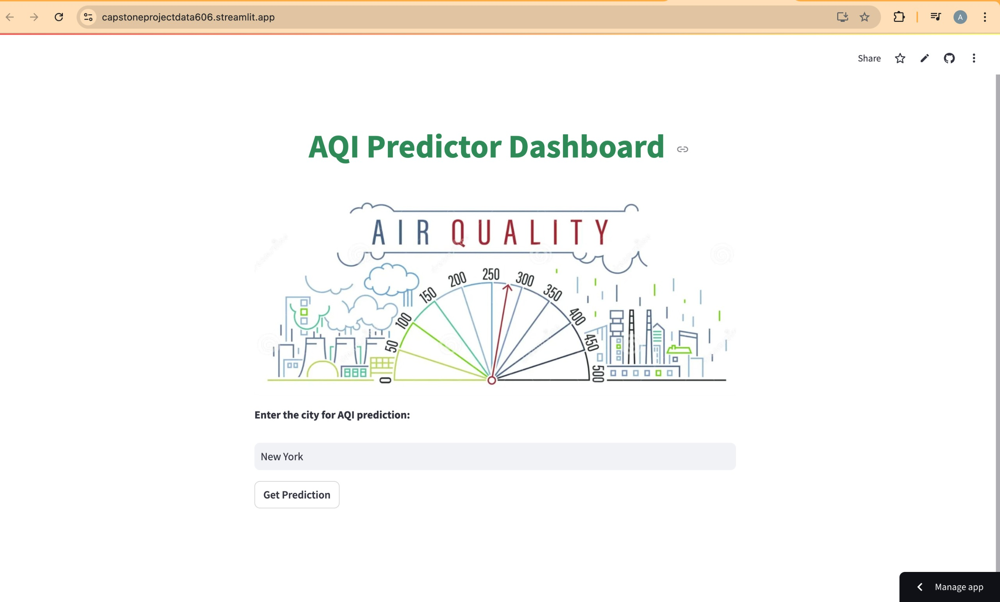
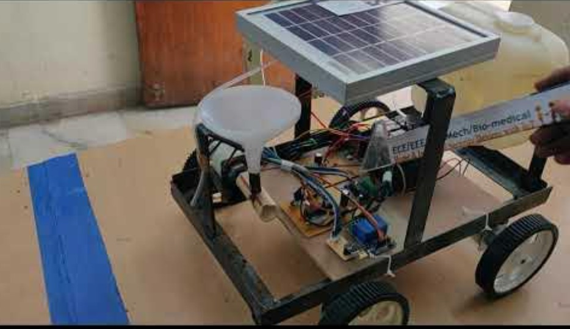
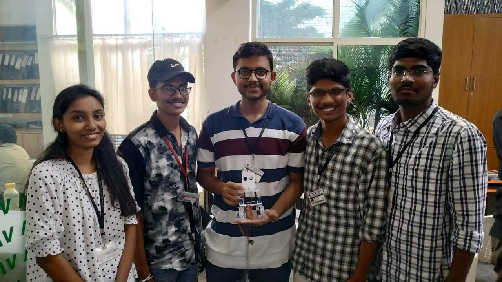
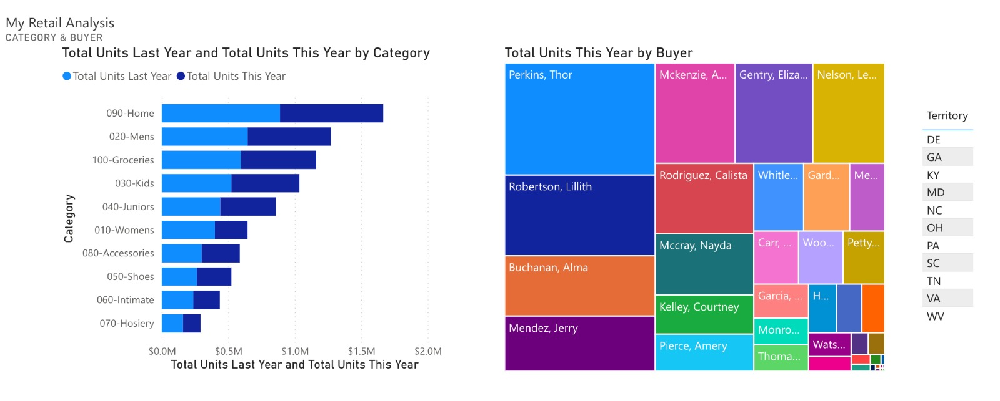

AI Engineer
Data Analyst
Machine Learning Engineer
Data Scientist
I'm a passionate Data Scientist with a strong foundation in AI, machine learning, and deep learning. I recently graduated with a Master’s degree in Data Science from the University of Maryland, Baltimore County (UMBC), where I sharpened my skills in transforming complex data into actionable insights.
Professionally, I spent almost two years as a Data Scientist at Cognizant Technology Solutions, where I led AI and machine learning initiatives. This included transitioning NLP models into production, building and deploying machine learning classifiers, and boosting performance metrics through data-driven approaches like A/B testing. My role involved end-to-end project development, from data preprocessing to deployment, and I collaborated with cross-functional teams to improve business outcomes.
Before my industry experience, my journey in AI and machine learning began during my undergraduate studies in Electrical and Electronics Engineering. I actively participated in hackathons and workshops, which fueled my passion for the field and shaped my problem-solving approach. During my Master’s program, I worked on a variety of projects ranging from deep learning to time series analysis, gaining hands-on experience with Python, SQL, AWS, TensorFlow, PyTorch, and other cutting-edge technologies.
I'm passionate about leveraging data science to solve real-world challenges and continue to expand my knowledge through continuous learning and collaboration. Explore my projects, and resume to see how I aim to make an impact through innovative data solutions.
Predicting Air Quality and Pollution Levels
Using Machine Learning

This project is my Master's capstone project in Data Science. The goal is to develop a predictive model using historical data and meteorological factors to forecast air quality. The model will help identify trends, detect pollution peaks, and assist in data-driven decision-making.
Weather Image Recognition System
This Python project leverages MongoDB, Tableau, and Spark to train a CNN model on 50,000 images, achieving 95% accuracy in predicting weather conditions. MongoDB stores images for efficient retrieval, while Power BI visualizes results
Fuel Consumption Prediction Using Regression Analysis
Developed regression models to predict miles per gallon (mpg) fuel consumption for vehicles based on various features. Explored multiple regression techniques including Linear Regression, Support Vector Regression (SVR), Decision Tree Regression, and Ridge Regression. Implemented best practices such as hyperparameter tuning, cross-validation, and regularization to optimize model performance.
Solar-Based Agriculture Robot Using IoT App

Developed a solar-based agriculture robot equipped with IoT capabilities to enhance farming efficiency and productivity. This project involved integrating sensors, actuators, and communication modules onto a robotic platform, allowing farmers to remotely monitor and control agricultural operations through a dedicated IoT application. The solar-powered design ensures sustainability and autonomy, enabling the robot to operate independently in remote agricultural settings.

Designed and constructed a humanoid robot capable of omnidirectional walking. This project involved the integration of mechanical, electrical, and programming components to create a functional robot capable of fluid movement in all directions. The humanoid robot demonstrates advanced locomotion capabilities, offering versatility and adaptability for various applications.

I designed and developed interactive Power BI dashboards to provide insightful data visualizations for decision-making. The dashboards focus on key metrics, with intuitive features such as drilldowns, filtering, and real-time data updates, enabling users to explore trends and analyze data at a granular level. These dashboards were crafted to present complex datasets in a user-friendly, visually appealing manner, aiding in actionable insights and improving business performance.